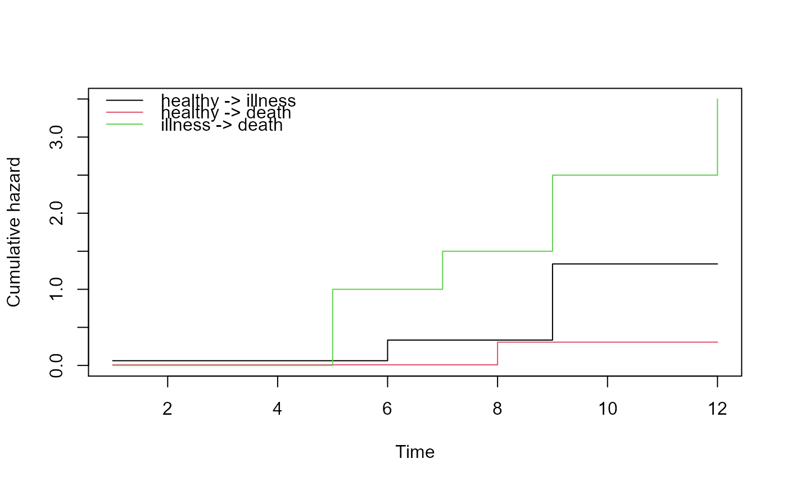
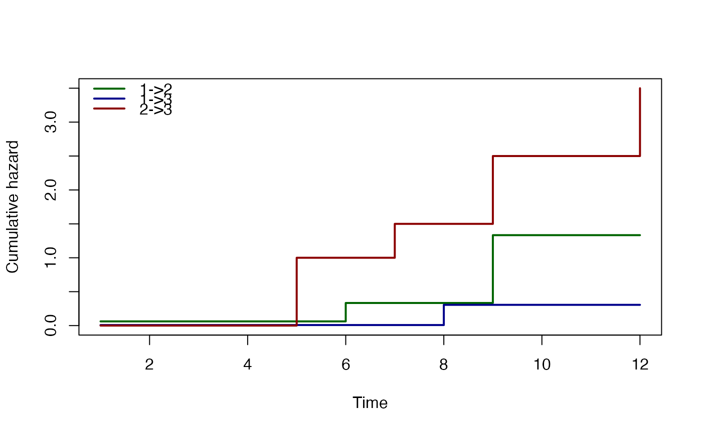

Plot method for an object of class 'msfit'. It plots the estimated cumulative transition intensities in the multi-state model.
# S3 method for msfit plot( x, type = c("single", "separate"), cols, xlab = "Time", ylab = "Cumulative hazard", ylim, lwd, lty, legend, legend.pos = "right", bty = "n", use.ggplot = F, xlim, scale_type = "fixed", ... )
| x | Object of class 'msfit', containing estimated cumulative transition intensities for all transitions in a multi-state model |
|---|---|
| type | One of |
| cols | A vector specifying colors for the different transitions;
default is 1:K (K no of transitions), when type= |
| xlab | A title for the x-axis; default is |
| ylab | A title for the y-axis; default is |
| ylim | The y limits of the plot(s); if ylim is specified for type="separate", then all plots use the same ylim for y limits |
| lwd | The line width, see |
| lty | The line type, see |
| legend | Character vector of length equal to the number of transitions,
to be used in a legend; if missing, these will be taken from the row- and
column-names of the transition matrix contained in |
| legend.pos | The position of the legend, see |
| bty | The box type of the legend, see |
| use.ggplot | Default FALSE, set TRUE for ggplot version of plot |
| xlim | Limits of x axis, relevant if use_ggplot = T |
| scale_type | "fixed", "free", "free_x" or "free_y", see scales argument of facet_wrap(). Only relevant for use_ggplot = T. |
| ... | Further arguments to plot |
No return value
Hein Putter H.Putter@lumc.nl
# transition matrix for illness-death model tmat <- trans.illdeath() # data in wide format, for transition 1 this is dataset E1 of # Therneau & Grambsch (2000) tg <- data.frame(illt=c(1,1,6,6,8,9),ills=c(1,0,1,1,0,1), dt=c(5,1,9,7,8,12),ds=c(1,1,1,1,1,1), x1=c(1,1,1,0,0,0),x2=c(6:1)) # data in long format using msprep tglong <- msprep(time=c(NA,"illt","dt"),status=c(NA,"ills","ds"), data=tg,keep=c("x1","x2"),trans=tmat) # events events(tglong)#> $Frequencies #> to #> from healthy illness death no event total entering #> healthy 0 4 2 0 6 #> illness 0 0 4 0 4 #> death 0 0 0 6 6 #> #> $Proportions #> to #> from healthy illness death no event #> healthy 0.0000000 0.6666667 0.3333333 0.0000000 #> illness 0.0000000 0.0000000 1.0000000 0.0000000 #> death 0.0000000 0.0000000 0.0000000 1.0000000 #>#> , , = 1 #> #> #> 2 3 #> 0 2 4 #> 1 4 2 #> #> , , = 2 #> #> #> 2 3 #> 0 0 0 #> 1 0 4 #># expanded covariates tglong <- expand.covs(tglong,c("x1","x2")) # Cox model with different covariate cx <- coxph(Surv(Tstart,Tstop,status)~x1.1+x2.2+strata(trans), data=tglong,method="breslow") summary(cx)#> Call: #> coxph(formula = Surv(Tstart, Tstop, status) ~ x1.1 + x2.2 + strata(trans), #> data = tglong, method = "breslow") #> #> n= 16, number of events= 10 #> #> coef exp(coef) se(coef) z Pr(>|z|) #> x1.1 1.4753 4.3723 1.2557 1.175 0.240 #> x2.2 0.8571 2.3563 0.8848 0.969 0.333 #> #> exp(coef) exp(-coef) lower .95 upper .95 #> x1.1 4.372 0.2287 0.3731 51.24 #> x2.2 2.356 0.4244 0.4160 13.35 #> #> Concordance= 0.781 (se = 0.077 ) #> Likelihood ratio test= 2.93 on 2 df, p=0.2 #> Wald test = 2.32 on 2 df, p=0.3 #> Score (logrank) test = 2.86 on 2 df, p=0.2 #># new data, to check whether results are the same for transition 1 as # those in appendix E.1 of Therneau & Grambsch (2000) newdata <- data.frame(trans=1:3,x1.1=c(0,0,0),x2.2=c(0,1,0),strata=1:3) msf <- msfit(cx,newdata,trans=tmat) # standard plot plot(msf)# specifying line width, color, and legend plot(msf,lwd=2,col=c("darkgreen","darkblue","darkred"),legend=c("1->2","1->3","2->3"))